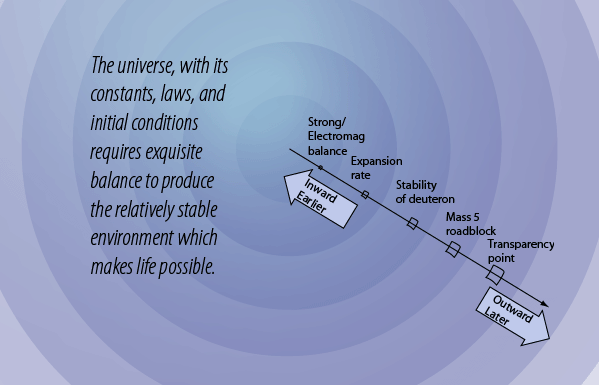
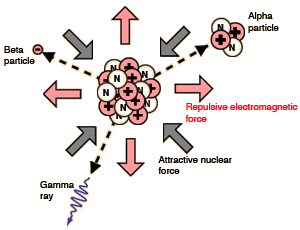
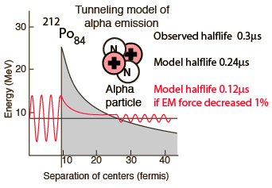

The Balance of the Strong and Electromagnetic Forces
|  |
The nuclear strong force and the electromagnetic force are the strongest of the four fundamental forces. Yet they are pitted against each other in the tiny world of the nucleus. If the nuclear force always had the upper hand, then matter in the early universe would have clumped together as heavy atoms and there would not have been the clouds of hydrogen and helium that gave birth to the stars. If the electromagnetic force always had the upper hand, then nuclei would not be stable and no appreciable amounts of heavy elements would form. |
The extreme sensitivity of radioactive decay to the balance between the strong and electromagnetic forces can be illustrated with alpha decay. Alpha decay can be modeled as quantum mechanical tunneling of alpha particles through a barrier that is formed by the competitive action of the forces. The illustration at right shows the radioactive halflife as a function of alpha particle energy for the natural radioactive series. The radioactive halflife varies over 20 orders of magnitude with just a little over a factor of two in alpha particle energy. |

|
|  |
The sensitivity of radioactive decay halflife to the balance between the nuclear strong and electromagnetic forces can be illustrated by modeling the alpha decay of Polonium-212. The observed radioactive halflife of this isotope is 0.3 μs. Modeling this nucleus as a sphere which decays by alpha tunneling gives a calculated halflife of 0.24 μs, so the model gives a reasonable estimate. If the electromagnetic force is decreased in strength by 1% and the identical calculation done, the calculated halflife is 0.12 μs. Just a 1% decrease cuts the radioactive halflife to one-half of its previous value! |
Halving the radioactive lifetime would have enormous effects. At any given time, it would double the radiation dose you would receive from a given mass of the radioisotope. The heating of the interior of the Earth from radioisotopes like uranium and thorium initially have a rate twice as large, but would decrease more rapidly. Such hypothetical scenarios will not be pursued further, but serve to make the point that a 1% change in the balance of the electromagnetic and nuclear strong forces would have a drastic impact on the future of the universe.
In fact, the relative strengths of all four of the fundamental forces is of critical importance in the kind of universe that can exist. The nature of the nuclear weak interaction is also crucial in the early universe. It is responsible for the decay of the neutron with a mean life of about 15 minutes. A typical weak interaction decay lifetime is on the order of 10-13 seconds, so the neutron is incredibly long-lived compared to its companions that also decay by the weak interaction. The weak interaction's balance with the forces that hold the neutron together is a very delicate one. The relatively long lifetime of the neutron fits into the picture of the critical nature of the expansion rate of the early universe.
| Why is the expansion rate critical? |
HyperPhysics  | R Nave |